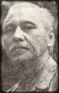

Quang Dũng
(1921-1988)
Quang Dũng tên thật Bùi Đình Diệm, sinh năm 1921 tại làng Phượng Trì, huyện Đan Phượng (nay thuộc Hà Nội).
Thuở nhỏ, ông theo học trung học tại trường Thăng Long, Hà Nộị Vào những năm kháng chiến chống Pháp, Quang Dũng hoạt động văn nghệ ở liên khu III, làm đại đội trưởng đoàn quân Tây Tiến (1947).
Sau năm 1954, ông sống như một kẻ vô danh tại miền Bắc, từ trần ngày 13 tháng 10 năm 1988 tại Hà Nội sau một thời gian dài đau bệnh.
Tác phẩm tiêu biểu: các tập thơ Bài Thơ Sông Hồng (1956), Rừng Biển Quê Hương (1957), Mây Đầu Ô (1986); truyện ngắn Mùa Hoa Gạo (1950); hồi ký Làng Đồi Đánh Giặc (1976)...
Thơ Quang Dũng nằm giữa biên giới của thật và mơ, như khói như mây mờ mờ ảo ảo, như tiếng vọng từ chân trời nào xa vắng...